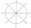
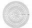
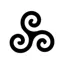
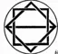
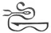
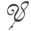
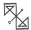
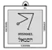
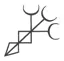
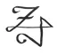

Symbol Grimoire
Amulet & Charm 24
Color 28
Cross 31
- Ankh
- Atlantean Cross
- Brighid's Cross
- Celtic Cross and Sun Cross
- Cross
- Cross and Crown
- Cross Lorraine
- Crucifix
- Crux Dissimulata
- Gammadion
- Globus Cruciger
- Inverted Cross
- Jerusalem Cross
- Labarum
- Latin Cross
- Leviathan Cross
- Maltese Cross
- Manji
- Orthodox Cross
- Palm Cross
- Papal Cross
- Rosy Cross
- Saint Brigid's Cross
- Saltire
- Scientology Cross
- Serpent Cross
- St Andrew's Cross
- St Peter's Cross
- Sun Cross
- Tau Cross
- Troll Cross
Emblem & Device 135
- Adinkra Symbols
- Aesclepius Wand
- Agnus Dei
- Akhet
- Anchor
- Ark
- Arrow
- Ashlar
- Ashtamangala
- Atheist Symbol
- Awen
- Axis Mundi
- Ba
- Bell, Book, and Candle
- Birth Bricks
- Black Stone
- Blazes and Trail Signs
- Book
- Breastplate of the High Priest
- Caduceus
- Chess
- Cicatrix
- Claddagh
- Columns, Jachin and Boaz
- Compasses and Square
- Cosmogram
- Crossed Keys
- Crossroads
- Crow's Foot
- Da'wah
- Dearinth
- Degrees of Witchcraft
- Djed
- Doorway
- Dreidel
- Egg

Eightfold Division of the Futhark- Enso
- Evangelists' Symbols
- Farohar
- Fasces
- Feather
- Fisherman's Ring
- Five Pillars of Islam
- Fleur de Lys

Futhark Pattern of Manifestation- Gopura
 Hagall (World-Tree)
Hagall (World-Tree)- Halo
 Hammer (Mjöllnir)
Hammer (Mjöllnir)- Hammer and Chisel
- Heraldry
- Hex Signs
- Horn (Caldron)
- Horns of Odin
- Hourglass
- I Ching
- Ichthys
- Invocation
- Irminsul
- Jain Symbol
- Kabbalah
- Key
- Khanda
- Kundalini Serpent
- Labrys
- Labyrinth
- Ladder
- Level and Plumbline
- Lightening Bolt
- Lingam
- Lion of Judah
- Magick Circle
- Man and Horse
- Man in the Maze
- Mankolam
- Mark of the Beast
- Mark of the Bustard
- Maypole
- Menorah
- Monad
- Moon (Runic)
- Navajo Sand Painting
- Ner Tamid
- Omphalos
- Orphic Egg
- Ouroboros
- Paisley
- Parasparopgraho Jivanam
- Pax Cultura
- Peace Sign
- Persian Rug
- Philosopher's Stone
- Point Within the Circle
 Raven Rune
Raven Rune- Rebis
- Rule
- Sacred Heart
- Scales
- Scientology Symbol
- Secret of Hermes
- Sefer Yetzirah Symbol
- Sheela Na Gig
- Shen
- Ship
- Signs of a Magician
- Skull and Crossbones
- Smoke Signals
- Stonemasons' Marks
- Sufi Winged Heart
- Sun sign
- Tetramorphs
- Theosophical Society
- Tilaka
- Tiratana
- Torii
- Totem
- Tracing Board
- Trident
- Triple Moon
- Triregnum

Triskele- Trisula
- Umbraculum
- Unification Church Symbol
- United States Dollar Bill
- Uraeus
- Urim and Thummim
- Vitriol
- Watermark
- Wings

Witches' Drum Symbol- Wreath
- Yab Yum
- Y of Pythagoras
Eye 5
Geomantic Figure 16
Knot 11
Number 61
Orientation 14
Sacred Geometry 16
Sacred Word & Glyph 22
Seal & Sigil 55
- Aegishjalmr
- Agriope Sigil
 Agroterra Sigil
Agroterra Sigil
Apotropaia Sigil- Astrum Argentum Seal
- Atalos Sigil
- Aurobore Sigil
 Azostos Sigil
Azostos Sigil- Boukolos Sigil
 Brimo Sigil
Brimo Sigil- Cagliostro Seal
- Cancellarius Seal
- Choku Rei
- Dadophorous Sigil
- Enodia Sigil

Fila Ton Skylon Sigil- Great Seal of the United States
- Hekate's Crossroads Sigil
 Hexagram of Solomon
Hexagram of Solomon- Kalachakra Seal
- Kamea
- Kleidophorous Sigil
 Kourotrophos Sigil
Kourotrophos Sigil
Kratais Sigil
Lamen of Hismael- Lamen of Michael
- Magick Seal
- Magic Square
- Messianic Seal
- Nictopolis Chthonie Sigil

Noctiluna Sigil- Pantous Cosmou Kleidochous Sigil
 Pentagram of Solomon
Pentagram of Solomon- Phileremos Sigil
- Phosphoros Sigil
- Pontos Riscados
- Propylaia Sigil
- Ringstone Symbol
- Scotia Sigil
- Seal of Shamash
- Seal of the Knights Templar
 Secret Seal of Solomon
Secret Seal of Solomon- Sigil
- Sigil of Ameth
- Sigil of Lucifer
- Skylakitin Sigil
 Soteira Sigil
Soteira Sigil Speirodrakontozonos Sigil
Speirodrakontozonos Sigil- Square of Mercury
 Thea Deinos Sigil
Thea Deinos Sigil Therebromon Sigil
Therebromon Sigil- Vassago's Sigil
- Voudon Veves

Zootrophos Sigil- Zoso